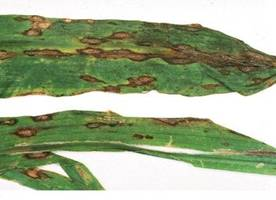

| Home |
| MAIZE |
mAJOR DISEASES |
| 1. Downy Mildew |
| 2. Sorghum downy mildew |
| 3. Phlippine downy mildew |
| 4. Crazy top |
| 5. Leaf blight |
| 6. Rust |
| 7. Head smut |
| 8. Charcoal rot |
mAJOR DISEASES |
| 1. Bacterial Stalk rot |
| 2. Mosaic |
| 3. Brown spot |
| Questions |
| Download Notes |
MAIZE :: MAJOR DISEASES :: LEAF BLIGHT
Leaf blight - Helminthosporium maydis(Syn:H. turcicum)
Symptoms
The fungus affects the crop at young stage. Small yellowish round to oval spots are seen on the leaves. The spots gradually increase in area into bigger elliptical spots and are straw to grayish brown in the centre with dark brown margins. The spots coalesce giving blighted appearance. The surface is covered with olive green velvetty masses of conidia and conidiophores.
|  |
Symptoms |
Pathogen
Conidiophores are in group, geniculate, mid dark brown, pale near the apex and smooth. Conidia are distinctly curved, fusiform, pale to mid dark golden brown with 5-11 septa.
Conidia |
Favourable Conditions
- Optimum temperature for the germination of conidia is 8 to 27˚C provided with freewater on the leaf.
- Infection takes place early in the wet season.
Disease cycle
It is a seed-borne fungus. It also infects sorghum, wheat, barely, oats, sugarcane and spores of the fungus are also found to associate with seeds of green gram, black gram, cowpea, varagu, Sudan grass, Johnson grass and Teosinte.
Management
- Treat the seeds with Captan or Thiram at 4 g/kg.
- Spray Mancozeb 2 kg or captan 1 kg/ha.